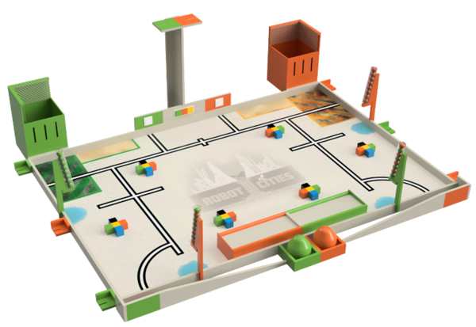
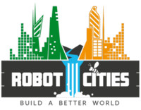

NOTE: Le VRAC n'était pas encore née en 2018, c'est bien en tant que CRAC de l'IUT de Cachan que nous participons pour la première fois!
1. Résumé du règlement
 Table Robot Cities
 Logo Robot Cities
Il y a 75 ans, Isaac Asimov créait les 3 lois de la robotique :
Un robot ne peut porter atteinte à un être humain, ni, en restant passif, permettre qu'un être humain soit exposé au danger ;
Un robot doit obéir aux ordres qui lui sont donnés par un être humain, sauf si de tels ordres entrent en conflit avec la première loi ;
Un robot doit protéger son existence tant que cette protection n'entre pas en conflit avec la première ou la deuxième loi.
Aujourd'hui, les robots ont besoin de nouvelles lois pour construire de nouvelles villes alors même que la préservation de l’environnement est un enjeu majeur de ces prochaines décennies. Ces nouvelles lois sont les suivantes :
Un robot doit préserver son environnement ;
Un robot peut utiliser les ressources naturelles disponibles autour de lui sauf si de tels ordres entrent en conflit avec la première loi ;
Un robot peut construire des maisons confortables à l'usage de ses habitants tant qu'il ne rentre pas en conflit avec la première ou la deuxième loi.
C'est en suivant au mieux ces nouvelles lois que vos robots vont devoir évoluer.
Vos missions seront :
Alimenter la ville en eau potable. L'eau est une ressource importante et son recyclage est indispensable pour la préserver.
Construire les immeubles. Il faut construire des logements pour les habitants de cette nouvelle ville.
Alimenter son panneau domotique. Pour bien contrôler sa ville il faut prendre soin de son panneau domotique.
Butiner une fleur. La pollinisation et la survie des abeilles sont des éléments importants pour la biodiversité en ville et le maintien de l’écosystème.
Évaluer sa performance. Comme dans tout projet, il est également important de savoir ce qui a bien été réalisé.
{kind=link}
{kind=link}
{kind=link}
{kind=link}
{kind=link}
{kind=link}
{kind=link}
{kind=link}
{kind=link}